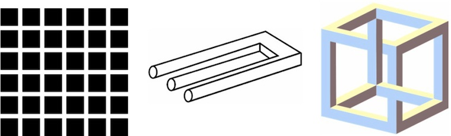

PERCEPTION.
What is the relationship of Rubello's work to optical illusion?
Optical illusions, which explore the mind's tendency to complete the incomplete, often prioritize a kind of visual epiphany.
But in Color Cubes, nothing, finally, is revealed. Its truth is flux, not revelation. The cubes are never really cubes at all. The "a-ha," the moment of clear seeing, is supplanted by a kind of suspended, electric uncertainty.
What Rubello's art shares with illusion is a special concern for the magic acts made possible by visual perception.
"The works of David Rubello," writes Diane Kirkpatrick, "express the wonder of human perception....They experiment with two-dimensional space, three-dimensional space, and the wondrous world of illusionism for the painter in the interplay between the two."18
The quality of perceptual play in Color Cubes and its cousins has antecedents in 20th century art (Escher , Albers , a host of Op artists ), but Rubello traces it much farther back: to ancient Roman mosaics he first encountered in Italy in the early 1960s.

See COLOR CUBES , INTERACTION , IRRATIONAL GEOMETRY , MOVEMENT , PERSPECTIVE , and DAVID RUBELLO